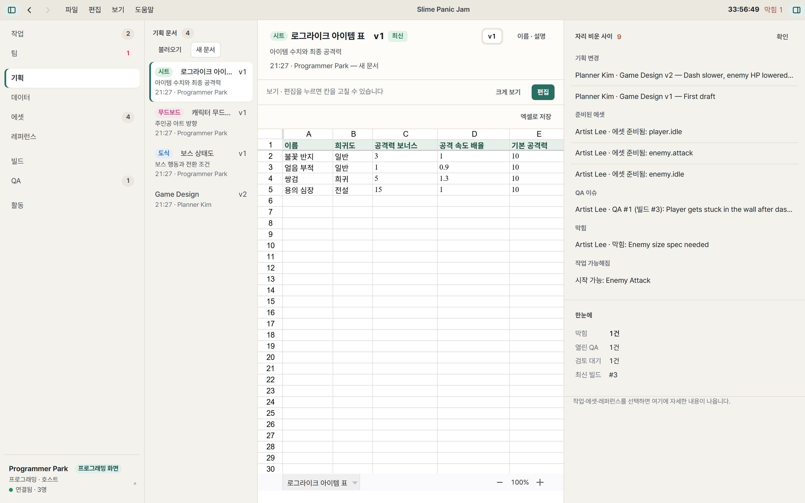

사용 설명서
잼을 열고 팀원이 모이기까지 5분이면 됩니다. 처음이라면 시작하기부터 잼 열기, 참가하기 순서로 읽어 보세요. 내 역할의 하루가 궁금하다면 역할별 안내를 보세요.
시작하기
Windows 10 또는 11에서 실행됩니다. 설치 없이 실행 파일 하나로 동작하고, 팀원 모두 같은 앱을 씁니다.
GameJam-Hub-Windows.zip을 받아 압축을 풀고 GameJam Hub.exe를 실행합니다. 같은 폴더의 gamejam-hub-mcp.exe는 AI 연결용, unity-plugin은 선택형 Unity 플러그인입니다.
업데이트: 0.2.0부터 앱을 켤 때 새 버전이 있으면 스스로 받아 다시 시작합니다. 잼 중에는 호스트 PC에서 받으므로 인터넷이 없어도 됩니다. 호스트와 버전이 다르면 화면 위에 알림이 뜹니다. 0.1.x를 쓰던 PC는 0.2.0을 한 번 직접 받아 주세요.
잼 열기 (호스트)
잼 동안 켜 둘 PC 한 대가 호스트가 됩니다. 모든 데이터는 이 PC에 저장됩니다.
- 앱을 열고 내 이름과 역할(기획, 아트, 프로그래밍 중 여러 개 가능)을 고릅니다.
- 새 잼 열기에 팀 이름과 시작 시간, 끝 시간을 넣고 잼 열기를 누릅니다. 팀 와이파이 켜기는 기본으로 체크돼 있어서, 잼이 열리면 이 PC가 와이파이를 엽니다. 게임 이름은 정해지면 설정 → 호스트에서 붙입니다(앱 위쪽에 "팀이름: 게임이름"으로 보입니다).
- 팀원에게 팀 와이파이 이름과 비밀번호, 방 코드(예:
AH83-G2)를 알려 줍니다. 잼이 열릴 때 뜨는 알림의 복사로 한 번에 복사하거나, 왼쪽 아래 프로필 메뉴에서 다시 볼 수 있습니다.
팀 와이파이는 Windows의 모바일 핫스팟을 씁니다. 호스트 PC가 행사장 와이파이나 유선 랜 중 하나에 연결돼 있어야 켤 수 있고(인터넷은 안 돼도 됩니다), 접속할 수 있는 대수는 프로필 메뉴에 나옵니다. 행사장 와이파이를 팀 모두가 같이 쓸 때만 체크를 끄세요.
처음 열 때 Windows 방화벽 창이 뜨면 개인 네트워크에서 허용하세요. 앱을 닫아도 데이터는 남아 있고, 시작 화면의 "이 PC에서 연 잼"에서 다시 열 수 있습니다.
참가하기 (팀원)
- 호스트가 알려 준 팀 와이파이에 접속합니다. 팀 와이파이를 쓰지 않는 잼이라면 호스트와 같은 와이파이에 접속합니다.
- 앱을 열고 이름과 역할을 고른 뒤 방 코드를 입력하고 참가를 누릅니다.
연결이 잠깐 끊겨도 마지막 화면은 그대로 보이고, 다시 연결되면 자동으로 따라잡습니다. 호스트 PC의 주소가 바뀌어도 방 코드로 다시 찾아갑니다.
연결이 안 될 때
| 증상 | 해결 |
|---|---|
| 방 코드로 찾지 못함 | 호스트의 팀 와이파이에 접속했는지 확인하세요. 팀 와이파이를 끄고 행사장 와이파이를 같이 쓰는 중이라면, 행사장 와이파이가 기기끼리의 연결을 막는 경우가 있습니다. 호스트가 왼쪽 아래 프로필 메뉴에서 팀 와이파이를 켜고, 팀원은 거기에 접속하세요. |
| 팀 와이파이가 켜지지 않음 | 호스트 PC가 와이파이나 유선 랜에 연결돼 있는지 확인하세요. 와이파이 장치가 핫스팟을 지원하지 않는 PC도 있습니다. 이때는 팀 공유기나 휴대폰 핫스팟 하나에 팀 모두가 접속하세요. |
| 호스트 화면에 "들어오는 연결이 막혀 있음" 경고 | Windows 네트워크가 '공용'으로 되어 있으면 방화벽이 막습니다. 경고의 안내대로 허용하거나 네트워크를 '개인'으로 바꾸세요. |
| 팀 와이파이로도 안 됨 | 시작 화면의 방 코드로 못 찾을 때: 주소로 참가를 켜고, 호스트 PC 왼쪽 아래 프로필에 나오는 주소를 192.168.0.10:47820처럼 포트까지 넣으세요. |
화면 둘러보기
왼쪽 메뉴에 화면이 있고, 오른쪽 패널에는 선택한 카드나 에셋의 자세한 내용이나 "자리 비운 사이 바뀐 것"이 나옵니다. 좌우 패널은 끌어서 넓히고, Ctrl B, Ctrl Shift B로 접습니다.
| 작업 | 담당 없음, 대기, 진행 중, 완료 칸으로 나뉜 보드와 일정 |
|---|---|
| 팀 | 누가 무엇을 하고 있는지, 막힌 사람, 자리 비움 |
| 기획 | 문서, 도식, 무드보드, 기획용 시트와 버전 비교 |
| 데이터 | 게임에 들어가는 수치 표 (엔진용 JSON으로 내보냄) |
| 에셋 | 그림과 소리 슬롯, 검토, Unity로 보내기 |
| 레퍼런스 | 방향을 잡는 참고 이미지와 메모 |
| 빌드 | 최신 빌드, 바로 실행(PLAY), 이전 빌드 |
| QA | 버그 보고와 처리 상태 |
| 문제해결기록 | 작업 일지, 문제 해결, 크레딧과 한마디, 내 포트폴리오 받기 |
| 활동 | 잼 전체의 기록 |
| AI | 내 AI 연결, 팀원의 AI가 바꾼 것, 팀 스킬 |
역할을 고르면 그 역할에 필요한 화면이 먼저 보입니다. 쓸 수 있는 기능은 역할과 상관없이 같습니다. 여러 역할이면 왼쪽 아래 프로필에서 화면을 바꿀 수 있습니다.
작업 카드
새 카드(N)로 만들고, 카드를 대기 칸으로 끌어 가져가거나 시작, 완료를 누릅니다. 카드를 열면 작업 지침, 왜 필요한가, 쓰이는 곳, 규격, 결과물, 참고할 것, 다음에 넘길 곳을 한 번에 볼 수 있습니다. 누가 무엇을 고쳤는지는 이력에 남습니다.
완료 칸은 위의 접기(최근 3장), 작게(사람마다 최근 1장), 크게(전부, 10장씩 페이지)로 골라 봅니다. 고른 것은 PC마다 기억합니다.
막혔을 때는 카드의 막혔어요를 누르세요. 팀 화면과 다른 사람의 화면 위쪽에 바로 보입니다. 화면의 어느 곳이든 Ctrl을 누른 채 클릭하면 그 자리를 팀원에게 가리킬 수 있습니다(핑).
기획 문서
기획 화면의 새 문서에서 종류와 템플릿을 고릅니다.
- 문서: 제목 단위로 나뉘어, 여러 사람이 서로 다른 부분을 동시에 고칠 수 있습니다. "Dash Cooldown: 1.5 sec"처럼 값을 적으면 버전 비교에서 "1.0 → 1.5"로 보입니다.
- 도식: 상자를 놓으면 격자에 맞고 연결선이 직각으로 꺾입니다. 가장자리 점을 끌어 다른 상자에 놓으면 연결됩니다.
- 무드보드: 이미지를 끌어 놓거나 붙여 넣고, 메모와 구역으로 정리합니다.
- 기획용 시트: 수식이 되는 표입니다. 엑셀 파일을 불러오고 저장할 수 있습니다.

에셋과 Unity
- 프로그래머나 기획자가 에셋 화면에서 슬롯 만들기로 필요한 그림을 요청합니다. 크기, 형식, 쓰이는 곳을 적습니다.
- 아트 보드에 카드가 생깁니다. 아티스트가 파일을 슬롯에 끌어 놓으면 이름과 규격을 확인해 줍니다.
- 준비 완료를 누르면, 프로그래머 화면에 데이터 업데이트가 생깁니다.
- 프로그래머가 설정에서 Unity 프로젝트를 연결해 두면, 업데이트 한 번으로
Assets/GameJamSync/에 같은 경로로 들어갑니다..meta를 건드리지 않아 프리팹 참조가 유지됩니다.
빌드와 플레이
빌드 화면에서 빌드 폴더를 고르고 빌드 올리기를 누릅니다. 와이파이가 끊기면 같은 폴더를 다시 올리면 끊긴 곳부터 이어 갑니다. 팀원은 PLAY로 바로 실행합니다. 두 번째 빌드부터는 바뀐 파일만 받습니다.
최종 제출할 빌드는 FINAL로 표시합니다. 이때 제출 전 점검 창이 뜹니다. 빌드를 올린 PC가 아닌 다른 팀원 PC에서 PLAY로 켜졌는지, Unity 빌드에 필요한 파일이 다 있는지 보여 줍니다. 내 PC에서만 되는 빌드를 제출하지 않도록, FINAL 전에 팀원 한 명이 꼭 PLAY해 보세요.
QA 보고
게임을 하다 문제가 보이면 Ctrl Shift Q를 누르세요. 스크린샷이 찍히고, 무슨 일이 있었는지 한 줄만 쓰면 지금 빌드와 함께 보고됩니다. 전체 화면 게임도 찍힙니다. 프로그래머는 QA 화면에서 고치는 중, 고침, 확인 완료로 상태를 바꿉니다.
Unity 플러그인 0.2.0을 프로젝트에 넣으면 보고에 게임 상황(장면, 플레이어 위치, FPS, 최근 오류)이 함께 붙습니다. 스크립트에서 GameJamHub.Qa.Set("stage", "2-1")처럼 원하는 값을 더할 수 있습니다.
백업 호스트
호스트 PC가 꺼져도 잼이 계속되도록, 팀원 한 명을 백업 호스트로 정해 두세요.
- 호스트: 설정 → 연결에서 팀원을 고르고 지정합니다.
- 지정된 사람: 같은 화면에서 수락하고 폴더 고르기를 누릅니다. 그때부터 잼 전체가 계속 복사됩니다.
- 호스트를 바꿀 때: 호스트는 호스트 넘기기, 백업 호스트는 호스트 이어받기. 팀원은 자동으로 새 호스트에 연결됩니다.
- 호스트 PC가 갑자기 꺼졌다면: 백업 호스트가 호스트 없이 이어받기로 마지막 복사본에서 이어 갑니다.
문제해결기록 (포트폴리오)
잼에서 한 일을 포트폴리오로 남기는 곳입니다(Alt 0). 사용량이나 수정 횟수 같은 숫자는 넣지 않고, 한 일을 글과 그림으로 남깁니다.
- 작업 일지: 방금 한 일을 한 줄과 그림 한 장으로. 카드로 남지 않는 일(디버깅, 통합, 조정)도 적습니다. 3시간 동안 없으면 한 번 알려 줍니다.
- 문제 해결: 막혔을 때 고치기 전에 상황과 스크린샷을 남기고, 고친 뒤 해결 방법과 배운 점을 적습니다.
- 크레딧과 한마디: 맡은 일을 적고 팀원의 확인을 받습니다. 서로 한마디를 남깁니다.
- QA를 고침으로 바꾸거나 에셋을 준비 완료로 넘기면 "문제 해결로 남기기", "작업 일지로 남기기"가 뜹니다. 누르면 내용과 그림이 채워진 창이 열립니다.
- AI가 쓴 기록에는 AI 초안 표시가 붙고, 기록 주인이 내 기록으로 확인을 눌러야 포트폴리오에 들어갑니다.
- 포트폴리오 받기로 맡은 일, 작업 하이라이트, 문제 해결, 팀원이 본 나, 게임에 들어간 결과물이 담긴 HTML과 Markdown을 받습니다.
AI 연결
팀원 누구나 왼쪽 메뉴 AI에서 자기 Codex나 Claude(Claude Code, Claude Desktop)를 연결합니다. 연결 정보를 복사해 AI 프로그램에 붙이면 되고, 팀 와이파이에 접속한 어느 PC에서든 붙습니다.
- AI는 "○○의 AI"라는 별도 팀원으로 카드, 문서, 표를 다룹니다. 바꾼 것은 모두 기록되고, AI를 연결한 사람이나 호스트가 한꺼번에 되돌리기로 되돌릴 수 있습니다.
- 역할과 상관없이 모든 팀원의 AI가 허브의 모든 도구를 씁니다. 사람이 편집 중인 문서 절이나 도식은 AI가 고치지 못합니다.
- AI가 여러 개를 만들 때는 바로 넣지 않고 제안합니다. 회의 메모로 만든 카드는 작업 화면에서, 디자인 가이드 초안은 기획 문서 목록 맨 위에서, 작업 일지와 문제 해결 초안은 문제해결기록에서 사람이 확인해야 들어갑니다.
- 팀 스킬: 팀이 반복해서 AI에게 설명하는 규칙을 남겨 두면 모든 팀원의 AI가 필요할 때 읽습니다. SKILL.md 받기로 Claude Code에 따로 넣을 수도 있습니다.
잼이 끝나면
호스트의 설정 → 호스트 → 마감 내보내기를 누르면 한 폴더로 정리됩니다: 요약, 문서(Markdown), 데이터 표(JSON, CSV), 에셋 마지막 버전, 최종 빌드, 카드와 QA 목록, 팀원 전원의 포트폴리오, 복원용 백업.
단축키
| Ctrl K | 명령 찾기 |
| Alt 1–9 | 화면 이동 |
| Alt 0 | 문제해결기록 |
| Alt ← Alt → | 뒤로, 앞으로 |
| N | 새 카드 |
| U | 에셋 올리기 |
| Ctrl + 클릭 | 그 자리를 팀원에게 가리키기(핑) |
| Ctrl 누른 채 이동 | 사람 호출 휠 |
| Ctrl Shift Q | QA 캡처와 보고 (게임 중에도) |
| Ctrl + Ctrl − Ctrl 0 | 화면 크기 |